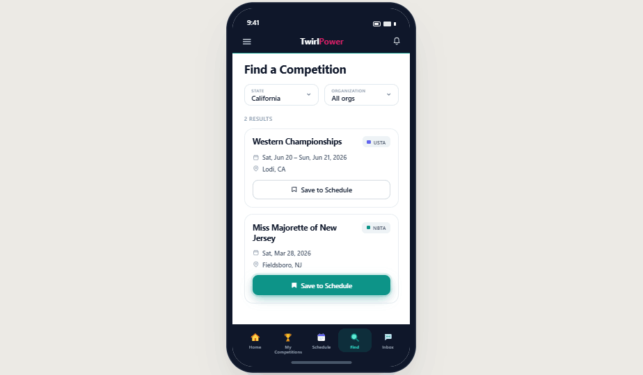
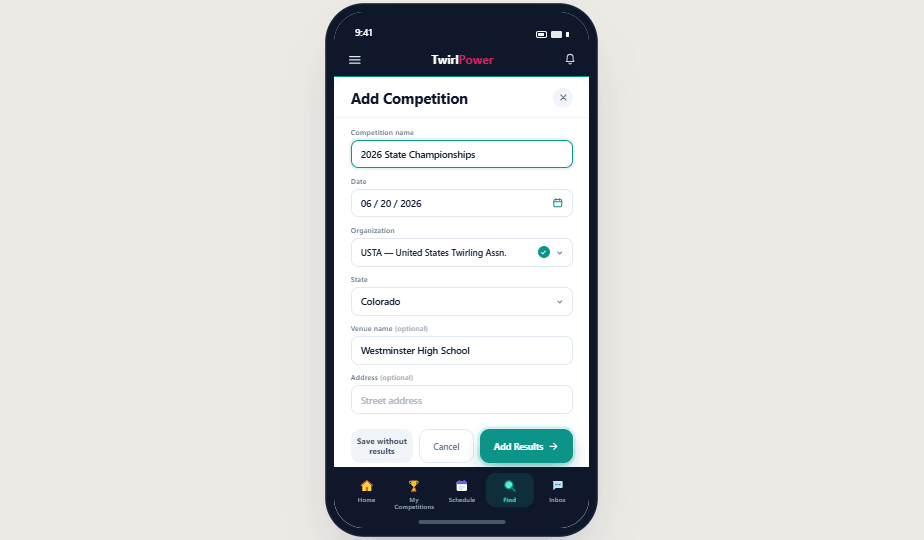
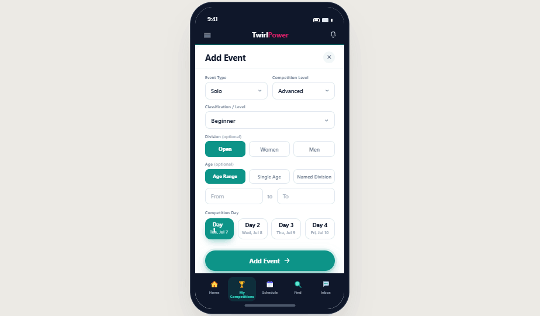
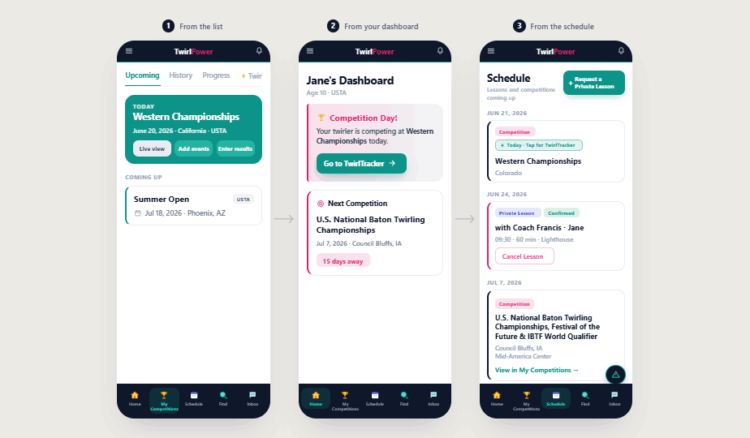
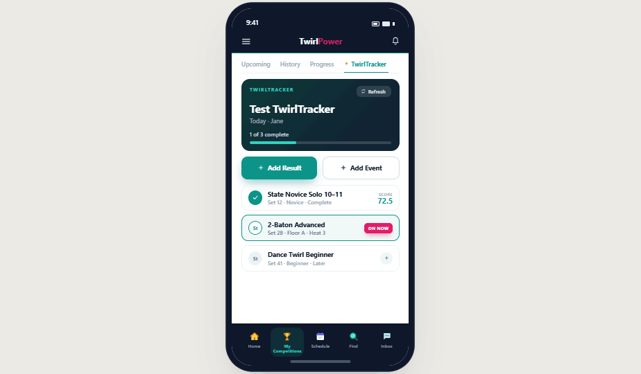

Here's how to set up TwirlPower and start tracking competitions, events, and results — so you always know exactly where your twirler stands.
Free tier available — always · iOS, Android & desktop · No credit card needed
Before you start tracking competitions, get the basics in place. Each step takes less than a minute.
Finding competitions in TwirlPower is the fastest way to get your twirler's season on record. The directory shows verified upcoming competitions you can save directly to your schedule.

If your competition isn't listed yet, you can add it yourself. Name, date, and organization are the only required fields.

Once a competition is on your schedule, add the specific events your twirler is entered in. You can do this before the competition or on the day.

Results can be entered during the competition or after. There are three ways to get there.

Go to "My Competitions," find the event, and tap "Enter Results."
If the competition is your next upcoming event, tap it on your dashboard, then go to the "Results" tab.
From the Schedule page on competition day, tap the TwirlTracker tab when it appears. Log each result live as your twirler competes.

Once a few competitions are in, your twirler's dashboard starts telling a real story.
The classification tracker shows exactly how many wins stand between your twirler and their next level — in every event, across every org. The win count builds automatically as you enter results. You stop guessing and start knowing. That's what TwirlPower is for.